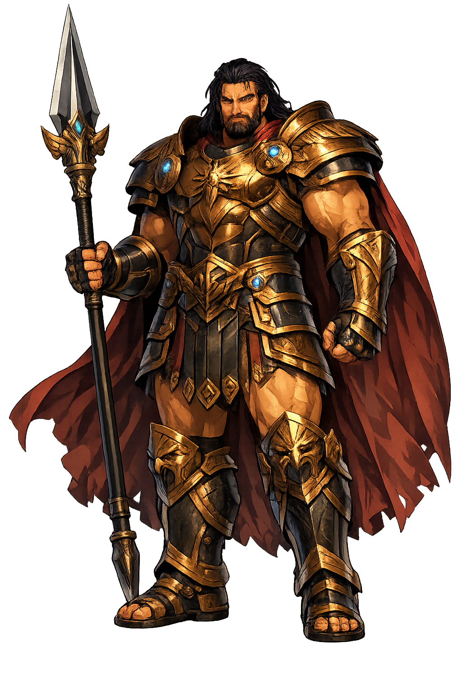

The Living Myth
Warcraft, Strategy, Celestial Bronze · Titan of warcraft; father of Nike, Kratos, Bia, and Zelos

Stories of Pállas
Pállas is a god without stories. No hymn celebrates him, no battle names him. What survives is a genealogy from Hesiod's Theogony — and, attached to his name, two later giants whom Athēnâ killed, whose deeds were quietly reassigned to the obscure Titan. His 'mythology' is the record of how little mythology a god can carry and still be a god.
Hesiod, Theogony 375–378, gives Pállas his only firm ground: he is the middle son of the Titan Kreios — 'the Ram', the star-name Aries behind the Greek — and Eurybia, daughter of Pontos, whose very name is 'wide force of the sea'. His brothers are Astraios, father of the stars and winds, and Persēs, father of Hekátē. The Titan who fathers warcraft thus comes from a marriage of sky-lineage with maritime power, and his brothers hand down the stars and the night-wandering queen alike. Apollodorus (Bibliotheca 1.2.2) repeats the trio of brothers centuries later without adding a single deed — the genealogy became canonical precisely because there was nothing else to say. The meaning is genealogical before it is narrative: war's craft is the middle child of heaven and the deep, and it shares a household with the very ordering of the sky.
Hesiod, Theogony 383–403, records the one great event of Pállas's life: his union with Styx, daughter of Okeanos and 'the eldest and most honoured' of the river-gods' daughters. From her he fathers four children — Zelos (Rivalry), Nike (Victory), Kratos (Strength), and Bia (Force) — and Styx, foreseeing the coming war of the gods, leads them to Zeus while her father counsels neutrality. Zeus rewards her with the greatest gift in the cosmos: henceforth the oath of the gods is sworn by Styx, and any god who forswears it lies breathless for a full year. Nike alone of the four will win a great cult of her own; the others remain permanent courtiers at the throne of Zeus. Pallas never appears in the poem again, yet everything he engendered became the permanent retinue of the new order: his children are the consequences of war, and they changed sides with it.
The name Pállas became famous for deeds the Titan never performed. Apollodorus (Bibliotheca 1.6.2) tells of a Giant named Pallas whom Athēnâ struck down in the Gigantomachy and flayed, wearing his skin as her storm-shield; in another passage (3.12.3) a giant named Pallas, foster-brother of the young Athena, is killed by her in a game of warcraft gone wrong — and Athena, grieving, sets his name before her own. The stories disagree wildly with each other and with Hesiod, and no ancient author reconciles them. The Titan Pállas has no part in any of it. The aegis, the Gorgoneion at its center, became one of the most copied images in ancient art, so the flaying survives wherever the goddess is carved. The confusion is itself instructive: an obscure god's name drifts toward a powerful goddess, and attribution follows fame — a warning against treating every 'Pallas' in the sources as one figure.
Hesiod's Theogony narrates the ten-year war of Zeus against the Titans at length, but Pállas is never named among the fighters. His father Kreios is imprisoned with the rest in Tartaros, while Pallas's own children fight on the winning side — a pattern unique in the Titan catalogue, where loyalty normally runs in the father's line. Later mythographers simply repeat the genealogy (Apollodorus 1.2.2) and leave the silence untouched; the Titan's personal role in the cosmic war is, in the strict sense, undocumented. The tradition has left us a god defined entirely by what he produces: warcraft belongs to no regime, and outlives every one of them. His house joins the losing order of the cosmos to its winning one, by marriage and by offspring — the only armistice the Titans ever signed.
Strategy, the Spear, and the Art of Battle
Pállas is the Titan of warcraft — battle understood not as berserk rage but as a discipline of spear, shield, and strategy. Genealogy is nearly his whole dossier: son of the Titan Kreios and the sea-might Eurybia, husband of the oath-river Styx, and father of the four war-born personifications who never leave a battlefield.
The weapon his name implies — πάλλω, 'to brandish' — and the craft of violence performed at a distance.
War as calculation: the disposition of forces before the clash, the older Titan discipline the Olympians inherited.
Nike (Victory), Kratos (Strength), Bia (Force), and Zelos (Rivalry) — his children by the river-oath Styx (Hesiod, Theogony 383–385).
The divine alloy that arms gods and Titans alike — the metal that never rusts and never misses its mark.
From the original script to the living URL
Πάλλας
The name in its original Greek form. Pállas (Πάλλας) is attested in the source tradition — “Titan of warcraft; father of Nike, Kratos, Bia, and Zelos”. Its acute accents carry the full phonetic and orthographic weight of the source tradition.
pallas
Reduced to plain pallas, the name loses everything that made it specific: acute accents. What remains is an ASCII string that machines can parse but that no longer speaks with its original voice.
Pállas
The Unicode restoration recovers what ASCII flattened. Pállas restores acute accents, returning the name to its original written dignity. The domain encodes to Punycode, but the browser displays the truth.
Pállas.com → xn--pllas-xqa.com
The non-ASCII characters in Pállas are encoded while the ASCII remains visible. To the DNS, it is Punycode. To humanity, it is Pállas.
Owned, ideal, and ASCII forms of Pállas
Pállas
Restores Πάλλας. The live temple domain — pállas.com.
pallas
Flattens Πάλλας. The plain ASCII fallback — what DNS and legacy systems see.
How Pállas was spoken
How Pállas is preserved in writing
A bespoke provenance study for Pállas is being prepared by the PUNICODEX scholarly team.
Contribute scholarly provenance →Pállas is the patron of a sobering thought: that a thing can be essential and anonymous at once. Warcraft — the drilling, the forging, the mathematics of the shield-wall — has no face in Hesiod, yet without it no Ilium falls and no Olympian order stands. His children, not he, are painted on vases; his wife, not he, is invoked when the gods swear their mightiest oath. He is the infrastructure of myth: present everywhere, visible nowhere.
Enter Extended Lore